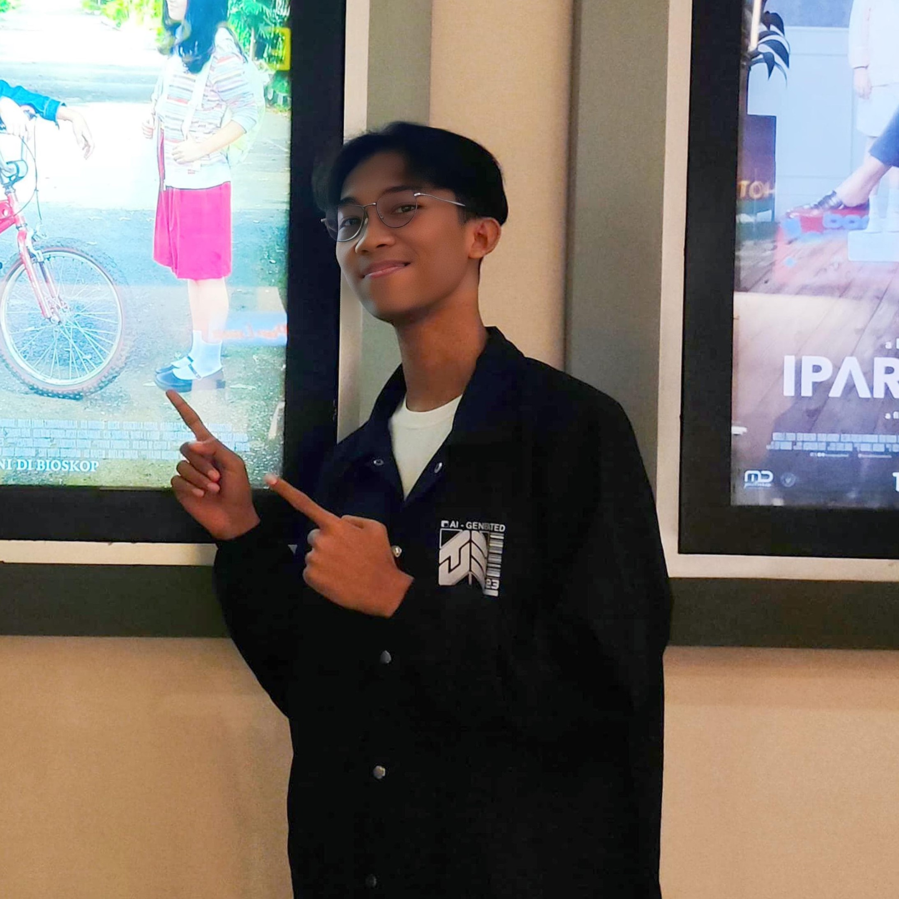

The Team
Tim Pengembang

Fakhri Muhammad Al Hisyam
Teknik Telekomunikasi
“If you find the one, hold on and fight for it like it’s your only truth.”
Muhammad Hilman Dzakwanurrofiq
Teknik Fisika
"Don't judge website by the fontend."

Muhammad Azriel Saputra
Teknik Biomedis
"Nikmati akses konten Platinum di Aplikasi Vidio. Cek atau aktifkan Vidio di mylM3 skrg! Berlaku utk 1 kali aktivasi."
Muhammad Fauzan Alviansyah
Teknik Elektro
"keep calm and blame it on the lag"